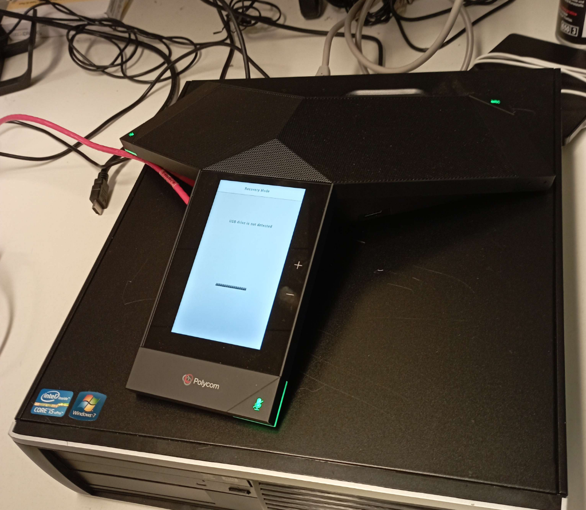

Dinsdag 17/01/2023
9:00-10:00
Vandaag begonnen we ook weer met Paul mensen helpen via mail met hun problemen.
10:00-12:00
Vanaf 10 uur begonnen we te proberen om de Polycom trio 8500 te connecten met de tv van de meetingroom voor teamsvergaderingen, we hebben hem moeten restarten en moeten testen met te bellen naar elkaar. Maar uiteindelijk werkte de microfoon van het apparaat niet maar die van de tv. hieronder vind je een foto van de Polycom trio 8500.

middag pauze tot 12:40
12:40-13:30
vanaf 12:40 zat ik bij Arthur, een collega van mijn bedrijfsmentor. Hij is beter in de software kant. Hij heeft mij rondgeleid en verteld hoe hij een programma in C-sharp had geschreven om de mensen in de onderhoud te helpen. dit was een efficient programma waar de mensen konden selecteren hoeveel, welke paletten en waar ze moeten geleverd worden. Dit had hij bedacht om het paletten systeem te versnellen in het bedrijf tegenover het vorige systeem van de paletten. Hij is ook bezig met een programma waar hij berekent hoe groot een bedrijf hun kantoor is zodat ze alleen naar grote bedrijven hun reclame kunnen sturen dat veel licht nodig hebben. Hij heeft me ook nog meer geleerd over C-sharp en wat je er allemaal mee kan doen.
13:30-16:30
Hier heb ik ook verder bij Arthur gezeten en hier heeft hij mij verteld dat hij programma's ook maakt met microsoft power apps en dat hij bezig is met een programma. Dit programma is gebruiksvriendelijker voor mensen die niet zo goed in computers/programmeren zijn. Hier heeft hij me ook vanalles mee geleerd. Bijvoorbeeld hoe dit programma werkt en wat je er allemaal mee kan, AND OR NOT,... Nadien heeft de andere collega Gunther mij nog advies gegeven voor later hoe het gaat zijn als je als IT'er werkt. En dat hij een soort Data analyst is en met verschillende databanken werkt. Voor de rest wat dit zowat mijn stagedag.
Besluit
Ik vond het programma dat hij had geschreven echt wel interessant en tof dat hij dat had gemaakt omdat dat het veel makkelijker maakt voor de mensen die daar werken. Ik heb vandaag veel bijgeleerd over het bedrijfsleven voor IT'ers en over C-sharp en over microsoft power apps. Vandaag kon ik het meeste wel goed begrijpen dus dat ging goed. Ik heb mijn familie verteld dat hij dat programma had gemaakt. Ik zou nog meer willen leren over het software gedeelte.